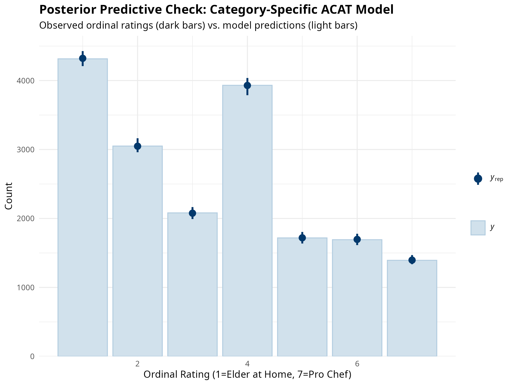
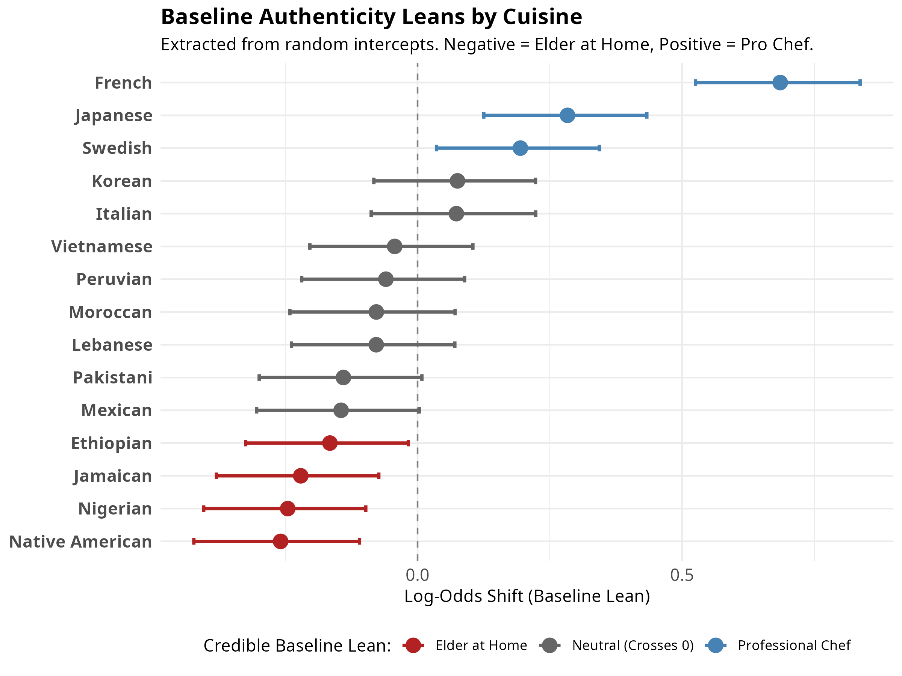

| Model | ELPD Difference | SE Difference | WAIC |
|---|---|---|---|
| Category-Specific (Model 2) | 0.0 | 0.0 | 55240.66 |
| Strict (Model 1) | -33.7 | 9.8 | 55308.07 |
Data Analysis Pipeline and Preliminary Results
Cuisine Authenticity and Taste
1. Introduction
This report outlines the full data analysis pipeline for analyzing how respondents perceive the authenticity and ideal preparation of various cuisines. The core dependent variable asks respondents to rate 15 different cuisines on a 1-to-7 ordinal scale mapping onto concepts of authenticity and professionalization:
- 1 = A Traditional Recipe by an Elder at Home
- 4 = Neutral / Midpoint
- 7 = A Developed Recipe by a Professional Chef at a High-End Restaurant
The primary analytical goal is to evaluate how sociodemographic factors and ideological leanings (e.g., Social Conservatism) influence these perceptions across the rating scale.
2. Data Preparation and Reshaping
The data pipeline begins with raw survey data combining Qualtrics and Prolific samples.
- Recoding and Cleaning (
recode.dat.R):- Demographic variables (age, education, income, gender, race) are cleaned and transformed into ordered/unordered factors (e.g.,
educ.f,inc.f) to act as fixed effects controls. - Ideological indices are constructed. Crucially, continuous predictors like Social Conservatism (
social) are mean-centered (social_c). Centering ensures that the model intercepts represent the “average” survey respondent, which aids in convergence and interpretation.
- Demographic variables (age, education, income, gender, race) are cleaned and transformed into ordered/unordered factors (e.g.,
- Long-Format Reshaping:
- To leverage multilevel modeling, the 15 separate cuisine rating columns are pivoted into a “long” dataset. Each row represents a single respondent’s rating of a single cuisine.
- This structure allows the model to treat both
respondent_idandcuisineas grouping variables (random effects), controlling for individual response tendencies and baseline differences between cuisines.
3. Modeling Strategy: Bayesian Adjacent Category (ACAT) Models
Because the outcome is a 1-to-7 ordinal scale, standard linear regression is inappropriate (it assumes the conceptual “distance” between a 1 and 2 is identical to a 6 and 7). Instead, we utilize Bayesian Multilevel Ordinal Models via the brms package.
We selected the Adjacent Category (ACAT) family. Unlike cumulative ordinal models (which predict the probability of rating at least a category), ACAT models predict the probability of choosing category \(k+1\) rather than category \(k\). This aligns conceptually with how survey respondents make step-by-step decisions on a Likert scale.
Strict vs. Category-Specific Effects
We fitted two competing model specifications: * Model 1 (Strict): Assumes that predictors (like social conservatism) have the exact same proportional effect across all thresholds (e.g., the push from 1 to 2 is the same as the push from 6 to 7). * Model 2 (Category-Specific): Relaxes this assumption using the cs() specification (e.g., cs(social_c)). This allows the slope of the predictor to vary across each step of the rating scale, capturing non-linear or polarizing effects at the extremes of the scale.
Computational Safeguards
Due to the massive complexity of Category-Specific ACAT models, they require significant computational resources. During model fitting, we encountered Out-Of-Memory (OOM) crashes and convergence warnings. The pipeline was adjusted to: * Increase iterations to 6,000 (with 3,000 warmup) to ensure sufficient Bulk Effective Sample Size (ESS) for complex parameters. * Restrict sampling to 2 cores to strictly manage RAM footprint. * Implement strategic file checkpointing (saveRDS) immediately after sampling to prevent data loss during heavy post-processing steps.
4. Model Comparison
To determine whether the complex Category-Specific model (Model 2) was justified over the simpler Strict model (Model 1), we compared their predictive performance.
Because standard Leave-One-Out Cross-Validation (LOO) requires allocating likelihood matrices that exceed system RAM, we utilized the Watanabe-Akaike Information Criterion (WAIC) subsetted to 1,000 random posterior draws.
Results:
- Conclusion: Because the difference in fit is more than three times the standard error, the Category-Specific model provides a statistically significant, superior fit. This confirms that the effect of social conservatism on cuisine ratings is not uniform across the 1-to-7 scale.
4.1 Posterior Predictive Checks
To ensure the ordinal model accurately captures the shape of the data, we perform a posterior predictive check (PPC). This compares the model’s predicted counts for each ordinal rating category against the actual observed distribution.

If the light blue intervals tightly capture the dark blue observed bars, particularly for the central neutral category (“4”) and the extremes, the model is successfully recovering the response process.
6. Baseline Cuisine Leans (Random Effects)
In addition to fixed effects like ideology, the model estimates a random intercept for each of the 15 cuisines. This shows us the baseline public consensus for where each cuisine “belongs” on the authenticity-to-professionalization spectrum, holding demographic and ideological differences constant.

Key Findings: * Most “Elder at Home”: Native American, Nigerian, Jamaican, and Ethiopian cuisines have statistically credible negative intercepts, meaning the average respondent views them as most authentically prepared by a traditional elder at home. * Most “Professional Chef”: French, Japanese, and Swedish cuisines have strong positive intercepts, firmly rooting them in the high-end professional/chef domain in the public eye. (French cuisine is the most extreme outlier in this direction). * Neutral / Contested: Cuisines like Mexican, Pakistani, Lebanese, Moroccan, Peruvian, Vietnamese, Italian, and Korean hover near zero (the intercept), suggesting either a true neutral midpoint view or high disagreement among respondents that washes out the aggregate baseline.